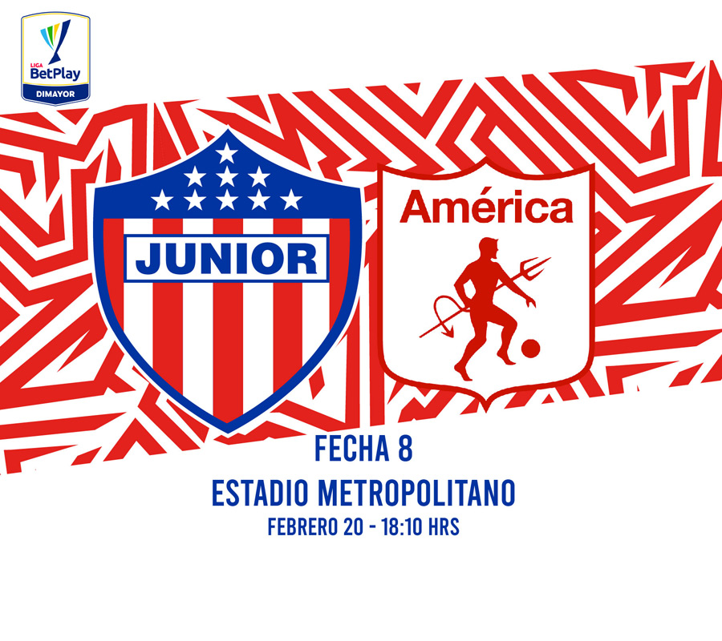
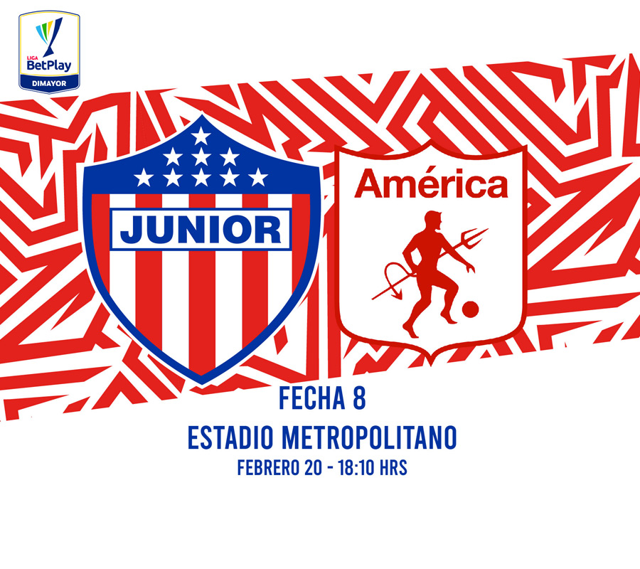

CLUB DEPORTIVO POPULAR JUNIOR FC S.A.
Reseña Historica
La historia comenzó en 1923 cuando se presentó la necesidad de crear un club que llevara la representación de los barrios San Roque y Rebolo. Existía un movimiento futbolero gestado dentro la influencia del Colegio de los Hermanos Salesianos quienes fundaron el equipo “Juventus” por ser ellos de ascendencia italiana y que luego se conociera como “Juventud”. Se forjó el deseo de conformar otro conjunto y fue así como el de 16 de agosto de 1923 se reunieron por primera vez un grupo de jóvenes en la casa de Manuel “Mañe” Vásquez. Pasó el tiempo y aumentó la expectativa para la creación del club, además de la creciente motivación de los jugadores menores del Juventud. Doña Micaela Lavalle de Mejía, una fiera enamorada del fútbol, se puso al frente y en compañía de su hijo Juan Mejía Lavalle contagiaron a un grupo de personas para adelantar la empresa, desarrollándose varias conversaciones para ello, hasta llegar a la noche del 7 de agosto de 1924 cuando se produjo la reunión debajo de un puente localizado en la Calle de Las Vacas con Carrera Buen Retiro, con el entorno de los tradicionales árboles de Matarratón barranquilleros, donde se congregaron jugadores y se proclamó el nacimiento del nuevo Club al que se le dio el nombre de “Juventud Infantil”. Eran estos jóvenes Víctor Bovea, Héctor Donado, Leovigildo Rolong, Vicente Cervera, Juan Mejía Manuel Vásquez, Víctor Núñez, Alberto De Las Salas, Rosendo Barrios, Valerio Molinares, Armando Moya, Aurelio Roa, Agustín Consuegra, Simeón
Manjarrés, Enrique Lamadrid, Pedro Yépez, Néstor García, Francisco Ibáñez, Nicolás Pineda, quienes contaron además con el apoyo de Efraín Borrero.
La primera Junta Directiva fue conformada así:
Presidente: Víctor Bovea
Tesorero: Manuel Vásquez
Secretario: Rosendo Barrios
Capitán: Juan Mejía
Asesor y Orientador: Efraín Borrero Castro
TITULOS DEL CLUB
1977: D..T. Juan Ramón Verón (Argentino )
1980: D.T. José Varacka (Argentino )
1993: D.T. Julio Avelino Comesaña (Uruguayo)
1995: D.T. Carlos Restrepo (Colombiano)
2004: D.T. Miguel Angel López (Argentino )
2010: D.T. Diego Umaña (Colombiano)
2011: D.T. José Hernández (Colombiano)
2018: D.T. Julio Avelino Comesaña (Uruguayo)
2019: D.T. Julio Avelino Comesaña (Uruguayo)
ESTADIO
Estadio Metropolitano Roberto Melendez
El Estadio Metropolitano Roberto Meléndez es un escenario para la práctica del fútbol y el atletismo en Barranquilla, Colombia. Fue inaugurado el 11 de mayo de 1986, sustituyendo al estadio Romelio Martínez como principal escenario para la práctica del fútbol y como sede del Junior de Barranquilla. El Metropolitano es también sede de la Selección Colombia para sus partidos como local por las eliminatorias a la Copa del Mundo. La Selección ha clasificado cinco de las seis veces en que este estadio ha sido sede de las eliminatorias.5
En las temporadas 20146 y 20157 fue sede de local de la Categoría Primera A de Uniautónoma F.C 8 y en la final de la Primera B 20139 frente a Fortaleza y en la Primera B 201210 fue sede de local de Barranquilla F.C y Uniautónoma frente a América de Cali y en la fecha 1 de la Primera B 2014 de Unión Magdalena frente a Cúcuta Deportivo y la Serie de Promoción de la Temporada 2014 de Uniautónoma frente a Deportes Quindío y el partido de fase 3 de la Copa Colombia 201811 Barranquilla F.C frente a Once Caldas.
Se han disputado las finales de la Copa Colombia de 2015 entre Junior de Barranquilla e Independiente Santa Fe; 2016 entre Junior y Atlético Nacional y 2017 entre Junior e Independiente Medellín.
Inauguración
La construcción del Metropolitano duró seis años, al cabo de los cuales se realizó una gran inauguración el 11 de mayo de 1986 con una muestra folclórica en la que participaron 5000 artistas, una ceremonia de entrega de condecoraciones a diversas personalidades del deporte colombiano, la presentación de un balón gigante del que salieron 200 palomas blancas y la celebración de un partido amistoso internacional entre el Junior y la Selección de Uruguay, dirigida por Omar Borrás, y que se aprestaba a participar en el Mundial de Fútbol de 1986.13
El partido se jugó ante 60000 espectadores14 y terminó con la victoria 2-1 de los uruguayos, con goles de Enzo Francescoli (el primer gol anotado en el estadio a los 62 minutos, de penalti) y Jorge Da Silva; el gol del descuento, por parte del cuadro local, fue obra de José "Perilla" Angulo, en el segundo tiempo. La primera tarjeta roja fue para el jugador uruguayo Walter Barrios a los 87 minutos.
Cuatro días más tarde se realizó otro partido amistoso entre Junior y la Selección de Argentina en la gira de preparación de esta última para el Mundial de Fútbol 1986 (en el cual fueron campeones), el cual terminaría empatado a cero goles. Jugaron entre otros por los argentinos Diego Maradona, Nery Pumpido, y por Junior estaban jugadores como el portero uruguayo Carlos Mario Goyén, Juan Carlos Abello y Mario Alberto Coll.
Monumento
El monumento denominado Ventana de Campeones al equipo junto a jugadores y entrenadores más importantes de su historia, proviene del mismo iniciador del monumento Ventana al mundo y fue prometido al entrenador Julio Comesaña al ganar el campeonato apertura de 2019. El diseño escogido por votación popular es un pórtico rectangular cuyo vano tiene forma de aleta de tiburón, por lo que popularmente es conocido como "la aleta".
OTRAS SECCIONES O FILIALES
Divisiones Menores
De las divisiones menores del Junior han salido jugadores como Teófilo Gutiérrez, Carlos Bacca, Macnelly Torres, Iván René Valenciano, Vladimir Hernández,109 Oswaldo Mackenzie, Alexis Mendoza, Jose Amaya, Jorge Bolaños, Luis Carlos Ruiz, y Víctor Danilo Pacheco.
Barranquilla F.C
Los juveniles de Junior reciben fogueo profesional a través de su filial Barranquilla Fútbol Club,110 que participa en el torneo de la Primera B del fútbol colombiano desde la temporada 2005.111
Equipo Femenino
En 2017, tras una resolución de la Dimayor que obligaba a todos los equipos profesionales del fútbol colombiano a contar con un equipo femenino, se fundó el Junior de Barranquilla Femenino que jugaría su primer torneo en la Liga Femenina 2018, compartiendo el grupo D con Atlético Nacional, Envigado, Real Cartagena y Unión Magdalena.
FICHAJES 2022
El mercado de Fichajes del club Junior Para esta segunda fase del futbol colombiano fue uno de los mas vistosos en el futbol colombiano.
Empezando por el defensor central Cesar Haydar, procedente del Redbull Bragantino de Brasil, Con pasado en el equipo tiburon, vuelve para ganarse un puesto en el equipo titular, El mediocampista Ivan Rossi, llegando del club Maritimo de portugal, con pasado en River y varios clubs del futbol argentino, El mediocampista ofensivo Nelson Deossa, Procedente del Atletico Huila Y cerrando con el delantero Carlos Arturo Bacca, LLegando como agente libre luego de su paso por Europa
Con estos fichajes Junior espera pelear por todos los titulos del futbol colombiano.
PROXIMOS PARTIDOS
Junior buscara sellar su paso a la siguiente fase de la Copa Betplay frente a nacional el dia jueves.
 Despues Enfrentara al equipo America De Cali por la fecha #8 del campeonato local

Despues Enfrentara al equipo America De Cali por la fecha #8 del campeonato local
